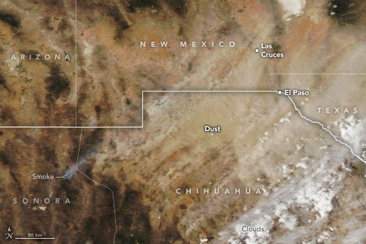

Dusty Days Are Here Again for El Paso
Spring and early summer are generally dusty in the Borderplex region of the Chihuahuan Desert—a transnational area spanning parts of southern New Mexico, West Texas, and the Mexican state of Chihuahua. With the region gripped by exceptional drought, this has been especially true in 2025.
The latest in a string of storms lofted particles from dried lakes and other parched sources in northern Chihuahua and New Mexico, sending them toward El Paso, Juárez, and Las Cruces. The MODIS (Moderate Resolution Imaging Spectroradiometer) on NASA’s Aqua satellite captured this image on April 27, 2025. The event followed a large dust storm a week earlier, as well as other major storms in early and mid-March.
Research indicates that March, April, and May are typically the most active months for airborne dust in El Paso. But the dust season so far this year has been “truly exceptional—one for the record books,” said Thomas Gill, an environmental scientist at the University of Texas at El Paso. For decades, Gill has used satellite observations and models to track dust activity in the Borderplex region and around the world.
He said this latest event is the tenth “full-fledged dust storm” of the year in El Paso, meaning visibility dropped to less than half a mile. By comparison, the average is 1.8 storms per year. “You would have to go back to 1936—during the Dust Bowl—to find a year with more,” Gill said. During the Dust Bowl years of 1935 and 1936, El Paso had 13 and 11 dust storms, respectively.
Unusual drought and windy conditions are fueling the surge in dust. “We’re in the worst drought we’ve seen in at least a decade, and this March was the windiest we’ve seen in more than 50 years,” Gill added.
Research shows dust storms can pose considerable hazards. In a 2023 analysis, Gill and colleagues noted that dust contributes to deadly traffic accidents and increases the risk of cardiorespiratory problems leading to emergency room visits. Dust may also help spread a fungal infection called Valley Fever, though the precise role of dust storms is still under study. Another analysis estimated that dust storms cause more than $150 billion in annual economic damage, affecting farmers, the healthcare sector, the renewable energy industry, and households.
Several tools powered by NASA data and satellites are available to meteorologists, scientists, and others tracking dust storms. The Worldview browser hosts timely data and imagery from several satellites, and NASA’s Global Modeling and Assimilation Office provides tools for real-time weather analysis and reanalysis.
Gill collaborates frequently with a NASA-sponsored health and air quality team led by Daniel Tong at George Mason University. The team is developing improved methods for forecasting and analyzing how dust storms affect air quality. NASA’s SPoRT (Short-term Prediction Research and Transition) project has also created a machine learning technique to track dust plumes at night.
“It should be interesting to see how far the dust from this event travels,” noted Santiago Gasso, a University of Maryland atmospheric scientist at NASA’s Goddard Space Flight Center. “Some of it could be headed to the Great Lakes, New England, and maybe even to Greenland, as happened after one of the storms in March.”
Up to this point in the 2025 season, the Borderplex region has seen 28 days with dust. Over the past 25 years, the average for an entire year is 22 days. “We still have several more weeks of the dust season to go,” Gill added, noting that forecasters are warning of more dust as early as this weekend.